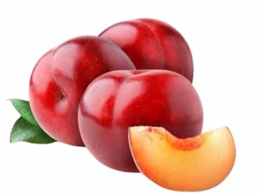

Início
Bem-vindo ao Empório do Bosque! Aqui você encontra uma grande variedade de produtos alimentícios, de higiene e limpeza. Faça suas compras com facilidade e comodidade, sem sair de casa!
Trabalhamos somente com produtos orgânicos e veganos, pensando sempre em qualidade de vida e sua saúde.
No empório do Bosque você tem a sua disposição produtos com bom preço e alta qualidade. Se tiver algum produto em especial que esteja procurando, entre em contato abaixo e ficaremos feliz em ajudá-lo.
Produtos
Frutas e Verduras
- Ameixa importada- R$ 14,99/kg
 - Beterraba - R$ 3,00/unidade

Produtos Alimentícios Não Perecíveis
- Arroz - R$ 16,60/1kg

- Produto orgânico
- Sem uso de agrotóxicos, adubos químicos e transgênico
- Certificado por auditoria. Selo Brasil SISORG. Instituto Certifica 257423.
- Azeite - R$ 78,90

- Produto orgânico
- Extra virgem extraido a frio
Umbuy Orgânicos Arroz Polido Orgânico Umbuy 1Kg Arroz
Sobre esse item:
Azeite de Oliva Extra Virgem Orgânico
Sobre esse item:
Produtos de Higiene e Limpeza
- Desinfetante - R$ 53,50/unidade

- Embalagem econômica
- Biodegradável, vegano, base vegetal
- Certificado ibd de ingredientes naturais.
- Amaciante - R$ 9,98/unidade
- Amaciante de roupas produzido com Álcool extraneutro orgânico
- Perfume duradouro
- Elimina resíduos de sabão
Biowash Bw Concentrado Multiuso Sensitve 1L
Sobre esse item:
Vinagreen Amaciante De Roupas Algodao 2 L.
Sobre esse item:
Serviços
- Retirada no Local - Gratuito
- Tele-entrega - R$ 10,00 (disponível para a região urbana)